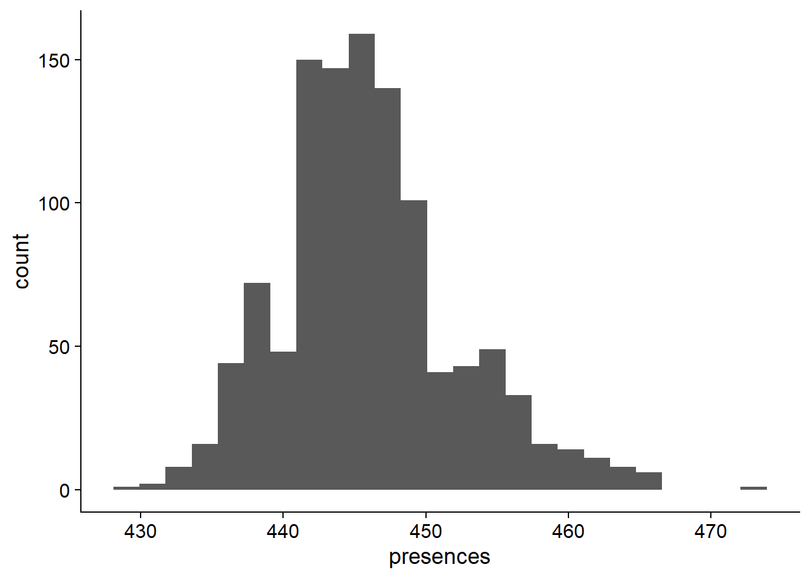
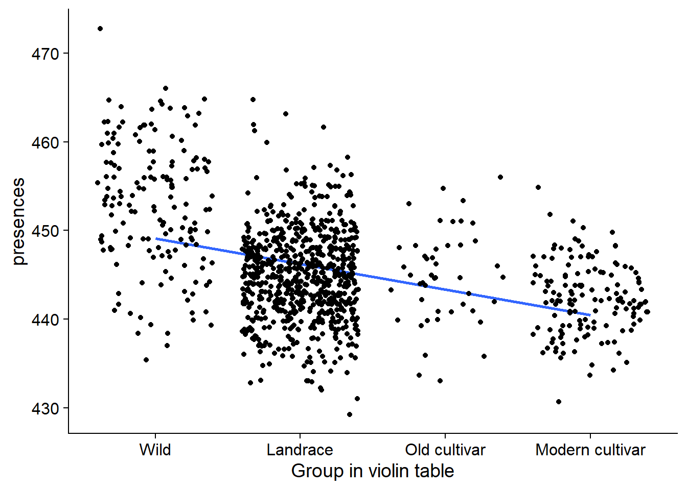

total_numbers
Philipp Bayer
2020-09-18
Last updated: 2020-09-18
Checks: 7 0
Knit directory: R_gene_analysis/
This reproducible R Markdown analysis was created with workflowr (version 1.6.2). The Checks tab describes the reproducibility checks that were applied when the results were created. The Past versions tab lists the development history.
Great! Since the R Markdown file has been committed to the Git repository, you know the exact version of the code that produced these results.
Great job! The global environment was empty. Objects defined in the global environment can affect the analysis in your R Markdown file in unknown ways. For reproduciblity it’s best to always run the code in an empty environment.
The command set.seed(20200917) was run prior to running the code in the R Markdown file. Setting a seed ensures that any results that rely on randomness, e.g. subsampling or permutations, are reproducible.
Great job! Recording the operating system, R version, and package versions is critical for reproducibility.
Nice! There were no cached chunks for this analysis, so you can be confident that you successfully produced the results during this run.
Great job! Using relative paths to the files within your workflowr project makes it easier to run your code on other machines.
Great! You are using Git for version control. Tracking code development and connecting the code version to the results is critical for reproducibility.
The results in this page were generated with repository version 111c739. See the Past versions tab to see a history of the changes made to the R Markdown and HTML files.
Note that you need to be careful to ensure that all relevant files for the analysis have been committed to Git prior to generating the results (you can use wflow_publish or wflow_git_commit). workflowr only checks the R Markdown file, but you know if there are other scripts or data files that it depends on. Below is the status of the Git repository when the results were generated:
Ignored files:
Ignored: .Rhistory
Ignored: .Rproj.user/
Note that any generated files, e.g. HTML, png, CSS, etc., are not included in this status report because it is ok for generated content to have uncommitted changes.
These are the previous versions of the repository in which changes were made to the R Markdown (analysis/total_numbers.Rmd) and HTML (docs/total_numbers.html) files. If you’ve configured a remote Git repository (see ?wflow_git_remote), click on the hyperlinks in the table below to view the files as they were in that past version.
| File | Version | Author | Date | Message |
|---|---|---|---|---|
| Rmd | 111c739 | Philipp Bayer | 2020-09-18 | wflow_publish(c(“analysis/eda.Rmd”, “analysis/first-analysis.Rmd”, |
This is the same analysis as first-analysis, but with total numbers, not percentages genes lost
knitr::opts_chunk$set(warning = FALSE, message = FALSE)
library(tidyverse)
library(patchwork)
library(ggsci)
library(dabestr)
library(dabestr)
library(cowplot)
library(ggsignif)
library(ggforce)
theme_set(theme_cowplot())Introduction
npg_col = pal_npg("nrc")(9)
col_list <- c(`Wild-type`=npg_col[8],
Landrace = npg_col[3],
`Old cultivar`=npg_col[2],
`Modern cultivar`=npg_col[4])
pav_table <- read_tsv('./data/soybean_pan_pav.matrix_gene.txt')NBS part
Let’s pull the NBS genes from the table
nbs <- read_tsv('./data/Lee.NBS.candidates.lst', col_names = c('Name', 'Class'))
nbs# A tibble: 486 x 2
Name Class
<chr> <chr>
1 UWASoyPan00953.t1 CN
2 GlymaLee.13G222900.1.p CN
3 GlymaLee.18G227000.1.p CN
4 GlymaLee.18G080600.1.p CN
5 GlymaLee.20G036200.1.p CN
6 UWASoyPan01876.t1 CN
7 UWASoyPan04211.t1 CN
8 GlymaLee.19G105400.1.p CN
9 GlymaLee.18G085100.1.p CN
10 GlymaLee.11G142600.1.p CN
# ... with 476 more rows# have to remove the .t1s
nbs$Name <- gsub('.t1','', nbs$Name)nbs_pav_table <- pav_table %>% filter(Individual %in% nbs$Name)names <- c()
presences <- c()
for (i in seq_along(nbs_pav_table)){
if ( i == 1) next
thisind <- colnames(nbs_pav_table)[i]
pavs <- nbs_pav_table[[i]]
presents <- sum(pavs)
names <- c(names, thisind)
presences <- c(presences, presents)
}
nbs_res_tibb <- new_tibble(list(names = names, presences = presences))OK what do these presence percentages look like?
ggplot(data=nbs_res_tibb, aes(x=presences)) + geom_histogram(bins=25) 
On average, 446.0027027 of NBS genes are present in each individual.
Now let’s join the table of presences to the four different types so we can group these numbers.
nbs_groups <- read_csv('./data/Table_of_cultivar_groups.csv')
nbs_joined_groups <- left_join(nbs_res_tibb, nbs_groups, by = c('names'='Data-storage-ID'))nbs_joined_groups$`Group in violin table` <- gsub('landrace', 'Landrace', nbs_joined_groups$`Group in violin table`)
nbs_joined_groups$`Group in violin table` <- gsub('Modern_cultivar', 'Modern cultivar', nbs_joined_groups$`Group in violin table`)
nbs_joined_groups$`Group in violin table` <- gsub('Old_cultivar', 'Old cultivar', nbs_joined_groups$`Group in violin table`)
nbs_joined_groups$`Group in violin table` <- factor(nbs_joined_groups$`Group in violin table`, levels=c(NA, 'Wild-type', 'Landrace', 'Old cultivar', 'Modern cultivar'))nbs_vio <- nbs_joined_groups %>% filter(!is.na(`Group in violin table`)) %>%
ggplot(aes(y=presences, x=`Group in violin table`, fill=`Group in violin table`)) +
geom_violin(draw_quantiles = c(0.5)) +
geom_sina(alpha=0.5) +
geom_smooth(aes(group=1), method='glm') +
scale_fill_manual(values=col_list) +
guides(fill = FALSE)
nbs_vio
nbs_joined_groups %>% filter(`Group in violin table` != 'NA') %>%
ggplot(aes(y=presences, x=`Group in violin table`, fill=`Group in violin table`)) +
geom_smooth(aes(group=1), method='lm', se = FALSE) +
geom_jitter() +
scale_fill_manual(values=col_list)+
guides(fill = FALSE)
nbs_joined_groups %>% filter(!is.na(`PI-ID`)) %>%
group_by(`Group in violin table`) %>%
summarise(min_present = min(presences),
max_present = max(presences),
mean_present = mean(presences),
median_present = median(presences),
std_present = sd(presences)) %>%
knitr::kable()| Group in violin table | min_present | max_present | mean_present | median_present | std_present |
|---|---|---|---|---|---|
| Wild-type | 435 | 473 | 452.9490 | 453 | 7.170806 |
| Landrace | 429 | 465 | 444.8907 | 445 | 5.011672 |
| Old cultivar | 433 | 456 | 444.8696 | 445 | 5.200892 |
| Modern cultivar | 431 | 455 | 442.3147 | 442 | 4.047986 |
RLK part
Let’s do the same plot with RLKs
rlk <- read_tsv('./data/Lee.RLK.candidates.lst', col_names = c('Name', 'Class', 'Subtype'))
rlk# A tibble: 1,173 x 3
Name Class Subtype
<chr> <chr> <chr>
1 GlymaLee.01G001800.1.p RLK lrr
2 GlymaLee.01G004900.1.p RLK lrr
3 GlymaLee.01G007300.1.p RLK lrr
4 GlymaLee.01G007400.1.p RLK lrr
5 GlymaLee.01G012800.1.p RLK other_receptor
6 GlymaLee.01G018800.1.p RLK lrr
7 GlymaLee.01G021100.1.p RLK other_receptor
8 GlymaLee.01G025500.1.p RLK lysm
9 GlymaLee.01G026500.1.p RLK other_receptor
10 GlymaLee.01G027000.1.p RLK lrr
# ... with 1,163 more rows# have to remove the .t1s
rlk$Name <- gsub('.t1','', rlk$Name)rlk_pav_table <- pav_table %>% filter(Individual %in% rlk$Name)
rlk_pav_table# A tibble: 1,173 x 1,111
Individual `AB-01` `AB-02` `BR-01` `BR-02` `BR-03` `BR-04` `BR-05` `BR-06`
<chr> <dbl> <dbl> <dbl> <dbl> <dbl> <dbl> <dbl> <dbl>
1 GlymaLee.~ 1 1 1 1 1 1 1 1
2 GlymaLee.~ 1 1 1 1 1 1 1 1
3 GlymaLee.~ 1 1 1 1 1 1 1 1
4 GlymaLee.~ 1 1 1 1 1 1 1 1
5 GlymaLee.~ 1 1 1 1 1 1 1 1
6 GlymaLee.~ 1 1 1 1 1 1 1 1
7 GlymaLee.~ 1 1 1 1 1 1 1 1
8 GlymaLee.~ 1 1 1 1 1 1 1 1
9 GlymaLee.~ 1 1 1 1 1 1 1 1
10 GlymaLee.~ 1 1 1 1 1 1 1 1
# ... with 1,163 more rows, and 1,102 more variables: `BR-07` <dbl>,
# `BR-08` <dbl>, `BR-09` <dbl>, `BR-10` <dbl>, `BR-11` <dbl>, `BR-12` <dbl>,
# `BR-13` <dbl>, `BR-14` <dbl>, `BR-15` <dbl>, `BR-16` <dbl>, `BR-17` <dbl>,
# `BR-18` <dbl>, `BR-20` <dbl>, `BR-23` <dbl>, `BR-24` <dbl>, `BR-29` <dbl>,
# `BR-30` <dbl>, `BR-32` <dbl>, DT2000 <dbl>, ESS <dbl>, For <dbl>,
# HN001 <dbl>, HN002 <dbl>, HN003 <dbl>, HN004 <dbl>, HN005 <dbl>,
# HN006 <dbl>, HN007 <dbl>, HN008 <dbl>, HN009 <dbl>, HN010 <dbl>,
# HN011 <dbl>, HN012 <dbl>, HN013 <dbl>, HN015 <dbl>, HN016B <dbl>,
# HN017B <dbl>, HN018 <dbl>, HN019 <dbl>, HN021 <dbl>, HN022 <dbl>,
# HN023 <dbl>, HN024 <dbl>, HN025 <dbl>, HN026 <dbl>, HN027 <dbl>,
# HN028 <dbl>, HN029 <dbl>, HN030 <dbl>, HN031 <dbl>, HN032 <dbl>,
# HN033 <dbl>, HN034 <dbl>, HN035 <dbl>, HN036 <dbl>, HN037 <dbl>,
# HN038 <dbl>, HN039 <dbl>, HN040 <dbl>, HN041 <dbl>, HN042 <dbl>,
# HN043 <dbl>, HN044 <dbl>, HN045 <dbl>, HN046 <dbl>, HN047 <dbl>,
# HN048 <dbl>, HN049 <dbl>, HN050 <dbl>, HN051 <dbl>, HN052 <dbl>,
# HN053 <dbl>, HN054 <dbl>, HN055 <dbl>, HN056 <dbl>, HN057 <dbl>,
# HN058 <dbl>, HN059 <dbl>, HN060 <dbl>, HN061 <dbl>, HN062 <dbl>,
# HN063 <dbl>, HN064 <dbl>, HN065 <dbl>, HN066 <dbl>, HN067 <dbl>,
# HN068 <dbl>, HN069 <dbl>, HN070 <dbl>, HN071 <dbl>, HN072 <dbl>,
# HN073 <dbl>, HN074 <dbl>, HN075 <dbl>, HN076 <dbl>, HN077 <dbl>,
# HN078 <dbl>, HN079 <dbl>, HN080 <dbl>, HN081 <dbl>, ...names <- c()
presences <- c()
for (i in seq_along(rlk_pav_table)){
if ( i == 1) next
thisind <- colnames(rlk_pav_table)[i]
pavs <- rlk_pav_table[[i]]
presents <- sum(pavs)
names <- c(names, thisind)
presences <- c(presences, presents)
}
rlk_res_tibb <- new_tibble(list(names = names, presences = presences))
rlk_res_tibb# A tibble: 1,110 x 2
names presences
<chr> <dbl>
1 AB-01 1167
2 AB-02 1162
3 BR-01 1166
4 BR-02 1165
5 BR-03 1166
6 BR-04 1167
7 BR-05 1164
8 BR-06 1167
9 BR-07 1165
10 BR-08 1167
# ... with 1,100 more rowsOK what do these presence percentages look like?
ggplot(data=rlk_res_tibb, aes(x=presences)) + geom_histogram(bins=25) 
On average, 1163.5036036% of NBS genes are present in each individual.
Now let’s join the table of presences to the four different types so we can group these numbers.
groups <- read_csv('./data/Table_of_cultivar_groups.csv')
groups# A tibble: 1,069 x 3
`Data-storage-ID` `PI-ID` `Group in violin table`
<chr> <chr> <chr>
1 SRR1533284 PI416890 landrace
2 SRR1533282 PI323576 landrace
3 SRR1533292 PI157421 landrace
4 SRR1533216 PI594615 landrace
5 SRR1533239 PI603336 landrace
6 USB-108 PI165675 landrace
7 HNEX-13 PI253665D landrace
8 USB-382 PI603549 landrace
9 SRR1533236 PI587552 landrace
10 SRR1533332 PI567293 landrace
# ... with 1,059 more rowsrlk_joined_groups <- left_join(rlk_res_tibb, groups, by = c('names'='Data-storage-ID'))rlk_joined_groups$`Group in violin table` <- gsub('landrace', 'Landrace', rlk_joined_groups$`Group in violin table`)
rlk_joined_groups$`Group in violin table` <- gsub('Modern_cultivar', 'Modern cultivar', rlk_joined_groups$`Group in violin table`)
rlk_joined_groups$`Group in violin table` <- gsub('Old_cultivar', 'Old cultivar', rlk_joined_groups$`Group in violin table`)
rlk_joined_groups$`Group in violin table` <- factor(rlk_joined_groups$`Group in violin table`, levels=c(NA, 'Wild-type', 'Landrace', 'Old cultivar', 'Modern cultivar'))rlk_vio <- rlk_joined_groups %>% filter(`Group in violin table` != 'NA') %>%
ggplot(aes(y=presences, x=`Group in violin table`, fill=`Group in violin table`)) +
geom_violin(draw_quantiles = c(0.5)) +
geom_sina(alpha=0.5) +
geom_smooth(aes(group=1), method='lm', se = FALSE) +
scale_fill_manual(values=col_list)+
guides(fill = FALSE)
rlk_vio
rlk_joined_groups %>% filter(!is.na(`PI-ID`)) %>%
group_by(`Group in violin table`) %>%
summarise(min_present = min(presences),
max_present = max(presences),
mean_present = mean(presences),
median_present = median(presences),
std_present = sd(presences)) %>%
knitr::kable()| Group in violin table | min_present | max_present | mean_present | median_present | std_present |
|---|---|---|---|---|---|
| Wild-type | 1154 | 1170 | 1164.357 | 1165 | 2.554565 |
| Landrace | 1157 | 1168 | 1163.217 | 1163 | 1.499264 |
| Old cultivar | 1161 | 1166 | 1163.587 | 1164 | 1.407537 |
| Modern cultivar | 1159 | 1168 | 1163.490 | 1163 | 1.472122 |
RLP part
And now with RLPs
rlp <- read_tsv('./data/Lee.RLP.candidates.lst', col_names = c('Name', 'Class', 'Subtype'))
# have to remove the .t1s
rlp$Name <- gsub('.t1','', rlp$Name)rlp_pav_table <- pav_table %>% filter(Individual %in% rlp$Name)names <- c()
presences <- c()
for (i in seq_along(rlp_pav_table)){
if ( i == 1) next
thisind <- colnames(rlp_pav_table)[i]
pavs <- rlp_pav_table[[i]]
presents <- sum(pavs)
names <- c(names, thisind)
presences <- c(presences, presents)
}
rlp_res_tibb <- new_tibble(list(names = names, presences = presences))OK what do these presence percentages look like?
ggplot(data=rlp_res_tibb, aes(x=presences)) + geom_histogram(bins=25) 
On average, 172.1693694% of NBS genes are present in each individual.
Now let’s join the table of presences to the four different types so we can group these numbers.
groups <- read_csv('./data/Table_of_cultivar_groups.csv')
rlp_joined_groups <- left_join(rlp_res_tibb, groups, by = c('names'='Data-storage-ID'))rlp_joined_groups$`Group in violin table` <- gsub('landrace', 'Landrace', rlp_joined_groups$`Group in violin table`)
rlp_joined_groups$`Group in violin table` <- gsub('Modern_cultivar', 'Modern cultivar', rlp_joined_groups$`Group in violin table`)
rlp_joined_groups$`Group in violin table` <- gsub('Old_cultivar', 'Old cultivar', rlp_joined_groups$`Group in violin table`)
rlp_joined_groups$`Group in violin table` <- factor(rlp_joined_groups$`Group in violin table`, levels=c(NA, 'Wild-type', 'Landrace', 'Old cultivar', 'Modern cultivar'))rlp_vio <- rlp_joined_groups %>% filter(`Group in violin table` != 'NA') %>%
ggplot(aes(y=presences, x=`Group in violin table`, fill=`Group in violin table`)) +
geom_violin(draw_quantiles = c(0.5)) +
geom_sina(alpha=0.5) +
geom_smooth(aes(group=1), method='lm', se = FALSE) +
scale_fill_manual(values=col_list)+
guides(fill = FALSE)
rlp_vio
rlp_joined_groups %>% filter(`Group in violin table` != 'NA') %>%
ggplot(aes(y=presences, x=`Group in violin table`, fill=`Group in violin table`)) +
geom_jitter() +
#geom_sina(alpha=0.5) +
scale_fill_manual(values=col_list)+
guides(fill = FALSE) +
ylim(c(87, 100))
rlp_joined_groups %>% filter(!is.na(`PI-ID`)) %>%
group_by(`Group in violin table`) %>%
summarise(min_present = min(presences),
max_present = max(presences),
mean_present = mean(presences),
median_present = median(presences),
std_present = sd(presences)) %>%
knitr::kable()| Group in violin table | min_present | max_present | mean_present | median_present | std_present |
|---|---|---|---|---|---|
| Wild-type | 168 | 177 | 173.4140 | 173 | 1.617392 |
| Landrace | 162 | 177 | 171.9668 | 172 | 1.661526 |
| Old cultivar | 169 | 176 | 171.8261 | 172 | 1.623499 |
| Modern cultivar | 169 | 175 | 171.8042 | 172 | 1.290587 |
Plotting together
nbs_vio + rlk_vio + rlp_vio
Stats - Dabayes
I want to know whether the groups are statistically significantly different. First let’s use dabestr
NBS
Let’s run dabestr first:
nbs_multi.two.group.unpaired <-
nbs_joined_groups %>% filter(!is.na(`PI-ID`)) %>%
dabest(`Group in violin table`, presences,
idx = list(c("Wild-type", "Landrace"),
c('Old cultivar', 'Modern cultivar')),
paired = FALSE)
nbs_multi.two.group.unpaireddabestr (Data Analysis with Bootstrap Estimation in R) v0.3.0
=============================================================
Good afternoon!
The current time is 15:40 PM on Friday September 18, 2020.
Dataset : .
The first five rows are:
# A tibble: 5 x 4
names presences `PI-ID` `Group in violin table`
<chr> <dbl> <chr> <fct>
1 AB-01 445 PI458020 Landrace
2 AB-02 454 PI603713 Landrace
3 DT2000 447 PI635999 Modern cultivar
4 For 448 PI548645 Modern cultivar
5 HN001 448 PI518664 Modern cultivar
X Variable : Group in violin table
Y Variable : presences
Effect sizes(s) will be computed for:
1. Landrace minus Wild-type
2. Modern cultivar minus Old cultivarnbs_multi.two.group.unpaired.meandiff <- mean_diff(nbs_multi.two.group.unpaired)
nbs_multi.two.group.unpaired.meandiffdabestr (Data Analysis with Bootstrap Estimation in R) v0.3.0
=============================================================
Good afternoon!
The current time is 15:40 PM on Friday September 18, 2020.
Dataset : .
X Variable : Group in violin table
Y Variable : presences
Unpaired mean difference of Landrace (n = 723) minus Wild-type (n = 157)
-8.06 [95CI -9.24; -6.86]
Unpaired mean difference of Modern cultivar (n = 143) minus Old cultivar (n = 46)
-2.55 [95CI -4.25; -0.97]
5000 bootstrap resamples.
All confidence intervals are bias-corrected and accelerated.plot(nbs_multi.two.group.unpaired.meandiff, color.column=`Group in violin table`,
rawplot.ylabel = 'Presence (%)', show.legend=FALSE)
RLK
rlk_multi.two.group.unpaired <-
rlk_joined_groups %>% filter(!is.na(`PI-ID`)) %>%
dabest(`Group in violin table`, presences,
idx = list(c("Wild-type", "Landrace"),
c('Old cultivar', 'Modern cultivar')),
paired = FALSE)
rlk_multi.two.group.unpaireddabestr (Data Analysis with Bootstrap Estimation in R) v0.3.0
=============================================================
Good afternoon!
The current time is 15:40 PM on Friday September 18, 2020.
Dataset : .
The first five rows are:
# A tibble: 5 x 4
names presences `PI-ID` `Group in violin table`
<chr> <dbl> <chr> <fct>
1 AB-01 1167 PI458020 Landrace
2 AB-02 1162 PI603713 Landrace
3 DT2000 1165 PI635999 Modern cultivar
4 For 1163 PI548645 Modern cultivar
5 HN001 1163 PI518664 Modern cultivar
X Variable : Group in violin table
Y Variable : presences
Effect sizes(s) will be computed for:
1. Landrace minus Wild-type
2. Modern cultivar minus Old cultivarrlk_multi.two.group.unpaired.meandiff <- mean_diff(rlk_multi.two.group.unpaired)
rlk_multi.two.group.unpaired.meandiffdabestr (Data Analysis with Bootstrap Estimation in R) v0.3.0
=============================================================
Good afternoon!
The current time is 15:40 PM on Friday September 18, 2020.
Dataset : .
X Variable : Group in violin table
Y Variable : presences
Unpaired mean difference of Landrace (n = 723) minus Wild-type (n = 157)
-1.14 [95CI -1.55; -0.717]
Unpaired mean difference of Modern cultivar (n = 143) minus Old cultivar (n = 46)
-0.0974 [95CI -0.562; 0.362]
5000 bootstrap resamples.
All confidence intervals are bias-corrected and accelerated.plot(rlk_multi.two.group.unpaired.meandiff, color.column=`Group in violin table`,
rawplot.ylabel = 'Presence (%)', show.legend=FALSE)No difference between old and modern cultivars!
RLP
rlp_multi.two.group.unpaired <-
rlp_joined_groups %>% filter(!is.na(`PI-ID`)) %>%
dabest(`Group in violin table`, presences,
idx = list(c("Wild-type", "Landrace"),
c('Old cultivar', 'Modern cultivar')),
paired = FALSE)
rlp_multi.two.group.unpaireddabestr (Data Analysis with Bootstrap Estimation in R) v0.3.0
=============================================================
Good afternoon!
The current time is 15:40 PM on Friday September 18, 2020.
Dataset : .
The first five rows are:
# A tibble: 5 x 4
names presences `PI-ID` `Group in violin table`
<chr> <dbl> <chr> <fct>
1 AB-01 171 PI458020 Landrace
2 AB-02 172 PI603713 Landrace
3 DT2000 171 PI635999 Modern cultivar
4 For 171 PI548645 Modern cultivar
5 HN001 172 PI518664 Modern cultivar
X Variable : Group in violin table
Y Variable : presences
Effect sizes(s) will be computed for:
1. Landrace minus Wild-type
2. Modern cultivar minus Old cultivarrlp_multi.two.group.unpaired.meandiff <- mean_diff(rlp_multi.two.group.unpaired)
rlp_multi.two.group.unpaired.meandiffdabestr (Data Analysis with Bootstrap Estimation in R) v0.3.0
=============================================================
Good afternoon!
The current time is 15:40 PM on Friday September 18, 2020.
Dataset : .
X Variable : Group in violin table
Y Variable : presences
Unpaired mean difference of Landrace (n = 723) minus Wild-type (n = 157)
-1.45 [95CI -1.74; -1.17]
Unpaired mean difference of Modern cultivar (n = 143) minus Old cultivar (n = 46)
-0.0219 [95CI -0.53; 0.477]
5000 bootstrap resamples.
All confidence intervals are bias-corrected and accelerated.plot(rlp_multi.two.group.unpaired.meandiff, color.column=`Group in violin table`,
rawplot.ylabel = 'Presence (%)', show.legend=FALSE)
Again, no difference between old and modern cultivars!
Stats - classic t-test
NBS
nbs_joined_groups %>%
filter( !is.na(`PI-ID`) ) %>%
ggplot(aes(x=`Group in violin table`, y = presences,
fill = `Group in violin table`)) +
geom_boxplot() +
scale_fill_manual(values = col_list) +
theme_minimal_hgrid() +
theme(axis.text.x = element_text(size=12),
axis.text.y = element_text(size=12)) +
geom_signif(comparisons = list(c('Wild-type', 'Landrace'),
c('Old cultivar', 'Modern cultivar')),
map_signif_level = T) +
guides(fill=FALSE)
RLP
rlp_joined_groups %>%
filter( !is.na(`PI-ID`) ) %>%
ggplot(aes(x=`Group in violin table`, y = presences,
fill = `Group in violin table`)) +
geom_boxplot() +
scale_fill_manual(values = col_list) +
theme_minimal_hgrid() +
theme(axis.text.x = element_text(size=12),
axis.text.y = element_text(size=12)) +
geom_signif(comparisons = list(c('Wild-type', 'Landrace'),
c('Old cultivar', 'Modern cultivar')),
map_signif_level = T) +
guides(fill=FALSE)RLK
rlk_joined_groups %>%
filter( !is.na(`PI-ID`) ) %>%
ggplot(aes(x=`Group in violin table`, y = presences,
fill = `Group in violin table`)) +
geom_boxplot() +
scale_fill_manual(values = col_list) +
theme_minimal_hgrid() +
theme(axis.text.x = element_text(size=12),
axis.text.y = element_text(size=12)) +
geom_signif(comparisons = list(c('Wild-type', 'Landrace'),
c('Old cultivar', 'Modern cultivar')),
map_signif_level = T) +
guides(fill=FALSE)
sessionInfo()R version 3.6.3 (2020-02-29)
Platform: x86_64-w64-mingw32/x64 (64-bit)
Running under: Windows 10 x64 (build 17134)
Matrix products: default
locale:
[1] LC_COLLATE=English_Australia.1252 LC_CTYPE=English_Australia.1252
[3] LC_MONETARY=English_Australia.1252 LC_NUMERIC=C
[5] LC_TIME=English_Australia.1252
attached base packages:
[1] stats graphics grDevices utils datasets methods base
other attached packages:
[1] ggforce_0.3.1 ggsignif_0.6.0 cowplot_1.0.0 dabestr_0.3.0
[5] magrittr_1.5 ggsci_2.9 patchwork_1.0.0 forcats_0.5.0
[9] stringr_1.4.0 dplyr_1.0.0 purrr_0.3.4 readr_1.3.1
[13] tidyr_1.1.0 tibble_3.0.2 ggplot2_3.3.2 tidyverse_1.3.0
[17] workflowr_1.6.2
loaded via a namespace (and not attached):
[1] nlme_3.1-148 fs_1.5.0.9000 lubridate_1.7.9 RColorBrewer_1.1-2
[5] httr_1.4.1 rprojroot_1.3-2 tools_3.6.3 backports_1.1.8
[9] utf8_1.1.4 R6_2.4.1 vipor_0.4.5 DBI_1.1.0
[13] mgcv_1.8-31 colorspace_1.4-1 withr_2.2.0 tidyselect_1.1.0
[17] compiler_3.6.3 git2r_0.26.1 cli_2.0.2 rvest_0.3.5
[21] xml2_1.3.2 labeling_0.3 scales_1.1.1 digest_0.6.25
[25] rmarkdown_2.3 pkgconfig_2.0.3 htmltools_0.5.0 dbplyr_1.4.4
[29] highr_0.8 rlang_0.4.6 readxl_1.3.1 rstudioapi_0.11
[33] farver_2.0.3 generics_0.0.2 jsonlite_1.7.0 Matrix_1.2-18
[37] Rcpp_1.0.5 ggbeeswarm_0.6.0 munsell_0.5.0 fansi_0.4.1
[41] lifecycle_0.2.0 stringi_1.4.6 whisker_0.4 yaml_2.2.1
[45] MASS_7.3-51.6 plyr_1.8.6 grid_3.6.3 blob_1.2.1
[49] promises_1.1.1 crayon_1.3.4 lattice_0.20-41 haven_2.3.1
[53] splines_3.6.3 hms_0.5.3 knitr_1.29 pillar_1.4.4
[57] boot_1.3-25 reprex_0.3.0 glue_1.4.1 evaluate_0.14
[61] modelr_0.1.8 vctrs_0.3.1 tweenr_1.0.1 httpuv_1.5.4
[65] cellranger_1.1.0 gtable_0.3.0 polyclip_1.10-0 assertthat_0.2.1
[69] xfun_0.15 broom_0.5.6 later_1.1.0.1 beeswarm_0.2.3
[73] ellipsis_0.3.1